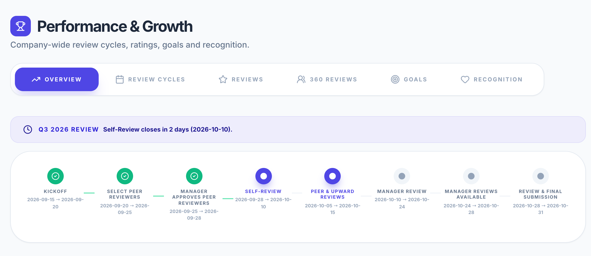
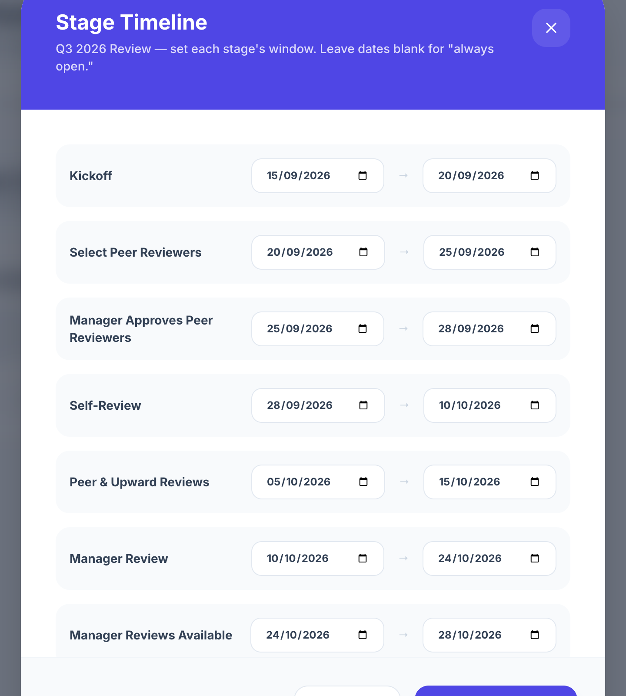

(a)
Active appraisal cycle overview: sequential stage progression bar, active stage tracking, and upcoming window deadline

(b)
Granular stage timeline configuration: appraisal windows with distinct start and due dates per review stage